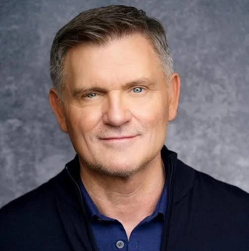
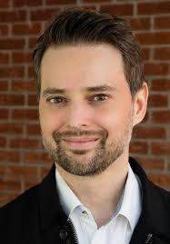
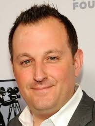
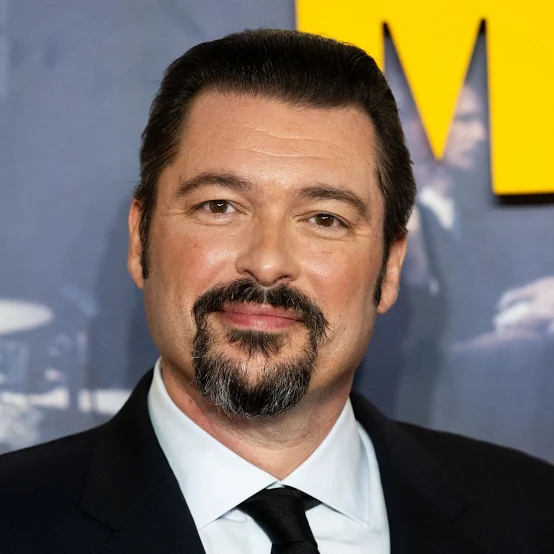
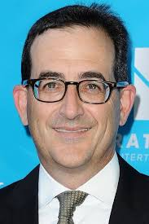
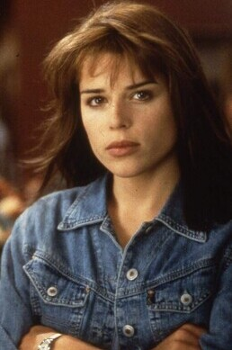

Scream movie
Kevin Williamson(Regisseur)
Kevin Williamson (1965) is een Amerikaanse scenarioschrijver, producer en regisseur. Hij is vooral bekend als de bedenker en schrijver van de Scream-films. Hij schreef het eerste Scream-script in 1996, dat het slashergenre opnieuw populair maakte. Hij werkte ook aan I Know What You Did Last Summer, The Faculty en maakte de serie Dawson’s Creek. Voor Scream 7 keert hij terug als schrijver en regisseur, waardoor fans verwachten dat de film weer de stijl van de originele delen krijgt.
Guy Busick(Scenarist)
Guy Busick is een Amerikaanse scenarioschrijver die vaak samenwerkt met regisseurs in het horror-genre. Hij werkte mee aan films zoals Scream (2022), Ready or Not en Escape Room. Voor Scream 7 is hij betrokken als schrijver, waardoor hij bijdraagt aan het behoud van de spannende en humoristische stijl van de eerdere films.
William Sherak(Producent)
William Sherak is een Amerikaanse filmproducent en mede-oprichter van het productiebedrijf Project X Entertainment, dat verantwoordelijk is voor de recente Scream-films. Hij werkte mee aan Scream (2022) en Scream VI, en keert voor Scream 7 terug als producent. Sherak houdt toezicht op het volledige productieproces, waaronder budget, planning en creatieve richting. Dankzij zijn ervaring in het genre helpt hij de moderne stijl van de nieuwe Scream-films te behouden.
James Vanderbilt(Producent)
James Vanderbilt is een Amerikaanse scenarioschrijver en producent. Hij schreef eerder de scripts voor Scream (2022) en Scream VI en is opnieuw betrokken bij Scream 7. Vanderbilt staat bekend om zijn mix van spanning, humor en meta-elementen in zijn verhalen. Naast zijn werk als schrijver is hij ook producent van het project, waardoor hij zowel het verhaal als de vormgeving van de film beïnvloedt.
Paul Neinstein(Producent)
Paul Neinstein is een Amerikaanse producent en partner bij Project X Entertainment. Hij werkte mee aan de recente delen van de Scream-reeks. Voor Scream 7 is hij opnieuw betrokken als producent en richt hij zich vooral op de logistieke en organisatorische kant van de productie. Zijn rol zorgt ervoor dat het maakproces soepel verloopt en de film de kwaliteit behoudt die fans gewend zijn.
Neve Campbell (Sidney Prescott)
Neve Campbell is een Canadese actrice die wereldberoemd werd door haar rol als Sidney Prescott in de Scream-films. Sidney is het hoofdpersonage van de reeks: een meisje dat in de eerste film wordt aangevallen door Ghostface en later uitgroeit tot een sterke vrouw die meerdere nieuwe aanvallen overleeft. Campbell speelde Sidney in bijna alle Scream-films, behalve Scream VI. In Scream 7 keert ze terug, waarbij Sidney opnieuw moet omgaan met een nieuwe Ghostface-dreiging. Samen vormen Neve Campbell en Sidney Prescott een van de meest herkenbare duo’s in moderne horror.
CourteneyCox (Gale Weathers)

Isabel May is een Amerikaanse actrice die vooral bekend werd door haar rollen in tv-series en films voor jongere en familievriendelijk publiek. Ze kreeg brede aandacht door haar rol als Summer “Izzie” Quay in de Netflix-serie Alexa & Katie, een komedie over twee middelbareschoolvriendinnen die samen met uitdagingen omgaan. Daarna speelde ze de hoofdrol in de Netflix-serie The Way Home, een coming-of-age verhaal over tieners en hun familie- en levensproblemen. Naast televisie stond Isabel May ook in films, waaronder Blue Miracle, een familiefilm waarin ze een van de hoofdrollen speelt. Ze staat bekend als een opkomend talent dat sterke, sympathieke personages neerzet in zowel drama als lichte drama/komedie. Wil je een korte lijst van haar belangrijkste films en series?
Isabel May
Isabel May is een Amerikaanse actrice die vooral bekend werd door haar rollen in tv-series en films voor jongere en familievriendelijk publiek. Ze kreeg brede aandacht door haar rol als Summer “Izzie” Quay in de Netflix-serie Alexa & Katie, een komedie over twee middelbareschoolvriendinnen die samen met uitdagingen omgaan. Daarna speelde ze de hoofdrol in de Netflix-serie The Way Home, een coming-of-age verhaal over tieners en hun familie- en levensproblemen. Naast televisie stond Isabel May ook in films, waaronder Blue Miracle, een familiefilm waarin ze een van de hoofdrollen speelt. Ze staat bekend als een opkomend talent dat sterke, sympathieke personages neerzet in zowel drama als lichte drama/komedie. Wil je een korte lijst van haar belangrijkste films en series?